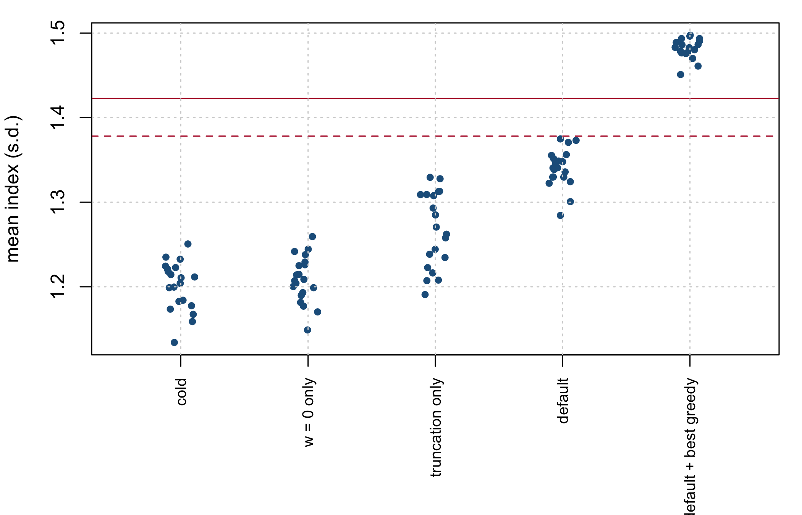

Chapter 15 posed the problem – choose \(n\) of \(N\) hybrids to maximise the mean index \(\bar u_S\) subject to \(\alpha(S) \le \alpha_{\max}\) (Equation 15.2) – and bounded it from above (Equation 15.7). It left to this chapter the discrete side: the decoder that turns a real-valued optimiser vector into \(n\) distinct hybrids, the per-line cap max_use, and the order in which to try methods. The chapter builds the strategies from the two that need no optimiser (truncation, and truncation under a per-line cap), through a greedy swept over an index weight, to differential evolution (DE), and measures each at the book scale.
What it finds depends on the evaluation budget of the DE, and the introduction says so rather than promise otherwise. Evaluations are counted nominally as NP\(\times\)itermax. The chapter runs sel_de() at 30,000 evaluations (NP = 120, itermax = 250) and, for its five-budget frontier, at 18,000 (NP = 100, itermax = 180); the printed defaults of sel_de() are NP = 300, itermax = 2000, that is 600,000. At the chapter’s budgets, and with the default warm start, the mean of the DE’s index over repeated seeds is below the best feasible greedy plan at each of the five diversity budgets tried (Section 16.5). At the 1% diversity budget, the only one run at a larger evaluation budget, that order reverses at 120,000 and at 600,000 evaluations (Section 16.4.2); the other four diversity budgets were not run above 18,000. The warm start is worth a measured amount over a cold start at 30,000 evaluations, the only budget at which a cold start was run, and the DE does improve on a greedy plan when that plan is among its seeds (Section 16.4.1; 1% budget, 30,000 evaluations). What the DE offers at the chapter’s budgets is a budget as its interface; the last section states what the three budgets do and do not support, within the limits of these measurements, which are one simulated dataset at the book scale.
The decision is a concrete one, and it is the last of a cycle in a cross-pollinated crop. Two heterotic pools, A and B, hold \(L_A\) and \(L_B\) inbred (or doubled-haploid) lines. Every candidate is one cross \(A_a \times B_b\), so the candidate set is the factorial \(N = L_A \times L_B\) – in maize, the set of single crosses that could be made from the current elite lines without introducing anything new. The \(n\) you keep are the crosses that go forward: into multi-location testing, into seed increase, and – through their parents – into the next recycling cycle. Keeping too few distinct parents is not a statistical inconvenience, it is a decision to narrow the pool that the programme will breed from next.
What has to be in hand before any line of this chapter runs is the three-object contract of Chapter 6:
X, the \(N \times m\) hybrid marker matrix, coded \(\{0, 0.5, 1\}\) as the average of the two homozygous parents;
f, the \(N \times N\) molecular coancestry of Caballero and Toro (2002), values in \([0, 1]\), built from X and never from a centred genomic relationship matrix (Section 2.2);
hybrids, carrying each cross’s parents and its predicted traits, from which build_ctx() forms the single index ctx$index, standardised to mean 0 and unit variance over the candidate set (Chapter 6).
Assumptions, declared once and not violated afterwards. They are those of Chapter 15, restated for the claims made here.
Parent lines are homozygous, so a hybrid’s genotype is the mean of its parents and X takes only the three values above. Markers are treated as neutral.
The index is the truth. Every index value below is ctx$index, computed from known marker effects, not a prediction. Nothing is re-predicted inside an optimiser, so the plans of this chapter are not evaluated against the error that a real index carries. Section 12.5 simulates one scenario of such error, correlated with relatedness; that scenario is not used here and is not a property the chapter relies on.
The constraint pins one lens.\(\theta\), \(GD\) and \(\alpha\) are the homozygosity lens; \(F_{\text{drift}}\), anchored on the frozen frequencies ctx$p0, is not pinned by \(\alpha\) (Chapter 10). ctx$p0 is the allele-frequency base of the candidate set, set once in build_ctx().
Diversity loss \(\alpha\) is always measured against a random subset of the same sizen_sel (Section 11.9), never against the whole candidate set.
Dominance appears nowhere in the objective: it is already inside the predicted hybrid performance, and the between-pool divergence that generates heterosis is a quantity to preserve, not to minimise (Chapter 5).
Scale. “Book scale” is 25 + 25 lines, 2000 markers, simulation seed 1, \(N =\) 625, \(n =\) 60, and is what every number below refers to unless a sentence names another scale. Four other scales are named where they occur, because the word “production” has been used for more than one of them: the benchmark book scale and the benchmark production scale of search_benchmark.csv (Chapter 17; regenerated in this repository by book/scripts/regenerate.R search), which the file records as \(N =\) 625, \(L =\) 50, \(n =\) 60, cap 5 and \(N =\) 10,000, \(L =\) 200, \(n =\) 200, cap 4; the cached-run scale of de_constraints.csv, \(N =\) 3,600 hybrids with \(L = 120\) lines (an external file, below); and the package production scale, 71 + 71 lines and \(N =\) 5,041, used only to count dimensions. The benchmark book scale has this chapter’s \(N\), \(L\) and \(n\) but a cap of 5, where this chapter’s capped truncation uses 4.
The per-line usage cap, defined once. A line \(a\) is used once by each selected hybrid it parents, so the number of uses is \(k_a\), with \(\sum_a k_a = 2n\) (Appendix A). The cap, \(k_{\max}\), is the largest \(k_a\) a plan may have: at most \(k_{\max}\) of the \(n\) selected hybrids may share a line as a parent. It is a count of crosses, not of seeds or plants. The argument that carries it is called cap in sel_truncation_cap() and max_use in sel_greedy(), make_fitness(), sel_de() and stage2_select() (and in decode_lines(), make_fitness_fast(), sel_de_fast(), sel_local_search() and ocs_round() of Chapter 17); it is one quantity under two argument names. max_use = NULL is the default everywhere and means no cap; it reproduces the behaviour before the cap existed bit for bit. sel_truncation_cap() has no NULL and defaults to ceiling(2 * n_sel / n_lines) + 1, one above even use. The realised value of a plan is max_line_use(), printed as max_line. In make_fitness() the cap enters as the number of parent slots above \(k_{\max}\), summed over lines and divided by \(2n\), added to the violation of \(\alpha\) and charged at the same penalty (R/03_de_select.R); in the greedy it is a feasibility test on the move.
Read it as a breeder would. 60 crosses are kept out of 625, which is 9.6% of the factorial. The 60 crosses consume \(2n =\) 120 parent slots spread over 50 lines, so a perfectly even plan would use each line 2.4 times – the scale against which any per-line cap has to be set. gd_ref is the gene diversity of a random subset of exactly this size, with its resampling standard deviation next to it. The last row is \(\alpha_{\text{trunc}}\) (Chapter 15), the loss of the truncation plan: pure truncation loses 4.12% of gd_ref. A budget \(\alpha_{\max} \ge \alpha_{\text{trunc}}\) constrains nothing, because truncation, which maximises the index, already meets it; that is the first thing to check and the subject of Chapter 15.
16.1 Four baselines before any optimiser
Four families – random, truncation, truncation under a per-line cap, and greedy – in six rows, because greedy is shown at three index weights.
Three of those six rows are the same plan. greedy_w1 and greedy_w3 return exactly the truncation set (the chunk asserts it) – same index, same \(\alpha\), same max_line – because both index weights sit far above the crossover measured in the w-units chunk below, where the merit term swamps the coancestry term and the greedy argmax degenerates to the index ranking. Read them as one row until that measurement has been made; it is the reason an \(\omega\) grid of round numbers is a trap.
Read the columns in this order, because each answers a different question and three of them are routinely skipped:
index, in standard deviations of the candidate set – what the plan is worth.
alpha_pct, the loss of gene diversity relative to a random subset of the same size – what it costs, on the lens the constraint will pin. Negative means more diverse than random.
Ns, the status number \(N_s = 1/(2\theta)\) (Section 11.3). On the molecular coancestry \(\mathbf{f}\) it lies in \([1/2, 1]\) and is a monotone rescaling of \(\theta\), not a head count; unlike \(\alpha\) it carries no reference to a random subset of the same size.
Ne_parents, the effective number of parent lines, which is computed from counts alone and is the metric that catches “\(\theta\) looks fine but twelve lines did all the work”.
max_line, the largest number of selected crosses sharing one parent, the realised \(k_{\max}\) – the operational number, because that line is a seed parent and has to be increased, maintained and, in a CMS system, converted.
Truncation is the plan of maximum mean index: the optimum with no constraint, and the reference for the budget (\(\alpha_{\text{trunc}}\)). It is what every programme does by default, and the interesting question is not whether it loses diversity but how little index a constrained plan has to give up relative to it. It is not the \(n\)-subset of lowest diversity (Chapter 15): a plan confined to fewer lines loses more.
Show code
# The top n crosses among those of the first three A lines (3 x 25 = 75 crosses).a3 <-which(ctx$ped$a %in%1:3)s3 <- a3[order(ctx$index[a3], decreasing =TRUE)][seq_len(n_sel)]a_trunc <-alpha_loss(sels[["truncation"]], ctx, null$gd_ref)a_three <-alpha_loss(s3, ctx, null$gd_ref)stopifnot(a_three > a_trunc)fmt(100*c(alpha_trunc_pct = a_trunc, alpha_three_A_lines_pct = a_three), 3)#> alpha_trunc_pct alpha_three_A_lines_pct #> 4.122 6.867
Truncation’s max_line here is 23: one line parents that many of the 60 selected crosses, against 2.4 under even use. That is the concentration a cap is meant to remove, and it is visible without any coancestry matrix. The plan confined to three A lines loses 6.87% against truncation’s 4.12%, so truncation is not the floor on diversity; it is the reference that a gain-maximising plan never needs to go beyond.
Truncation with a per-line cap is the cheap baseline that deserves more attention than it gets. It needs no coancestry matrix at all – only counting:
Show code
sel_truncation_cap#> function (ctx, n_sel, cap = ceiling(2 * n_sel/ctx$n_lines) + #> 1) #> {#> ord <- order(ctx$index, decreasing = TRUE)#> used <- integer(ctx$n_lines)#> out <- integer(0)#> for (i in ord) {#> a <- ctx$ped$a[i]#> b <- ctx$ped$b[i]#> if (used[a] < cap && used[b] < cap) {#> out <- c(out, i)#> used[a] <- used[a] + 1L#> used[b] <- used[b] + 1L#> if (length(out) == n_sel) #> break#> }#> }#> out#> }#> <bytecode: 0x76d822c008>#> <environment: namespace:hybdiv>
The procedure, stated as a breeder would run it:
Rank all 625 candidate crosses by index, best first.
Walk down the ranking. Admit a cross only if both its parents are still below the cap.
Stop when n_sel crosses have been admitted, or when the ranking is exhausted – in which case the returned vector is shorter than n_sel and the cap was infeasible for this set size.
A cap \(k_{\max}\) admits at most \(L_A k_{\max}\) crosses through pool A and at most \(L_B k_{\max}\) through pool B, so \(n \le k_{\max}\min(L_A, L_B)\) is necessary for the walk to reach \(n\): here 60 against
It is not sufficient, because the walk is greedy and can exhaust the ranking while admissible slots remain on lines that no remaining cross uses together:
Show code
# Random complete factorials with L_A, L_B in 2..6 and cap in 1..4, at the# boundary n = cap * min(L_A, L_B), where the necessary condition holds with# equality; random index values; the package's own sel_truncation_cap().set.seed(1)n_draw <-20000short <-replicate(n_draw, { LA <-sample(2:6, 1); LB <-sample(2:6, 1); k <-sample(1:4, 1) fc <-list(index =rnorm(LA * LB), N = LA * LB, n_lines = LA + LB,ped =data.frame(a =rep(1:LA, LB), b = LA +rep(1:LB, each = LA)))length(sel_truncation_cap(fc, k *min(LA, LB), cap = k)) < k *min(LA, LB)})data.frame(draws = n_draw, walk_short =sum(short), share_short =round(mean(short), 4))
draws
walk_short
share_short
20000
1640
0.082
At the boundary the walk returned fewer than \(n\) crosses in 8.2% of 20,000 random small factorials, so the condition is not a guarantee. At this chapter’s \(n\) the margin is wide (the cap-diagnostics chunk below reaches n_sel), which is why the walk succeeds here; the check that works at any size is to length() the returned vector.
The default cap is ceiling(2 * n_sel / ctx$n_lines) + 1, one above even use, which is 4 here. Filling 60 slots under it required scanning 413 of the 625 ranked candidates, and only 16 of the resulting crosses are also in the truncation set: the cap does not trim the top of the ranking, it reshuffles most of it. The last two rows count the same reshuffling in lines rather than in crosses, and they are the reason \(N_{e,\text{par}}\) is not a line count: the capped plan touches 32 distinct parent lines against truncation’s 33, out of 50 available – to within one line, the same set size – while its effective number of parents is 31 against 13. What the cap changes is how evenly the 120 parent slots are spread over the lines that are used, not how many lines are used at all.
What that buys and what it costs, separately. The cap cuts the diversity loss from 4.12% to 0.33% and raises the effective number of parents from 13 to 31, at 41% of truncation’s index. Whether that is a good trade is a programme decision, not a statistical one – but note that the capped plan is feasible at a 1% budget while truncation is not, and it was found by counting alone.
Before reaching for an optimiser, run this. If a per-line cap already meets your constraint at an acceptable index, you are done. The failure mode at this step is silent: a returned vector shorter than n_sel, which every downstream metric will happily evaluate on the wrong set size – length() it.
16.2 Greedy, with incremental updates
Adding hybrid \(j\) to an existing set changes the submatrix total by \(2 s_j + f_{jj}\), where \(s_j\) is the sum of \(f_{ij}\) over the already-chosen. That makes each step \(O(N)\) instead of \(O(n^2)\), and the whole construction affordable.
Show code
S <-sel_greedy(ctx, n_sel =10, w =1)j <-setdiff(seq_len(ctx$N), S)[1]f <- ctx[["f"]]recomputed <-sum(f[c(S, j), c(S, j)]) # O(n^2), from scratchincremental <-sum(f[S, S]) +2*sum(f[S, j]) + f[j, j] # O(n), the updatestopifnot(isTRUE(all.equal(recomputed, incremental)))c(recomputed = recomputed, incremental = incremental)#> recomputed incremental #> 87.07925 87.07925
Show code
sel_greedy#> function (ctx, n_sel, w = 0, max_use = NULL) #> {#> f <- ctx[["f"]]#> d <- diag(f)#> s <- numeric(ctx$N)#> avail <- rep(TRUE, ctx$N)#> out <- integer(n_sel)#> total <- 0#> if (!is.null(max_use)) {#> pa <- as.integer(ctx$ped$a)#> pb <- as.integer(ctx$ped$b)#> cnt <- integer(ctx$n_lines)#> }#> for (k in seq_len(n_sel)) {#> theta_new <- (total + 2 * s + d)/k^2#> score <- w * ctx$index - theta_new#> score[!avail] <- -Inf#> j <- which.max(score)#> if (!is.finite(score[j])) {#> out <- out[seq_len(k - 1L)]#> break#> }#> out[k] <- j#> avail[j] <- FALSE#> total <- total + 2 * s[j] + d[j]#> s <- s + f[, j]#> if (!is.null(max_use)) {#> for (a in c(pa[j], pb[j])) {#> cnt[a] <- cnt[a] + 1L#> if (cnt[a] >= max_use) #> avail[pa == a | pb == a] <- FALSE#> }#> }#> }#> out#> }#> <bytecode: 0x76d82d5d58>#> <environment: namespace:hybdiv>
One step \(k\), in the order the code performs it:
theta_new <- (total + 2 * s + d) / k^2 is the group coancestry the set would have, for every candidate at once, with total the current submatrix sum, s the running vector of coancestry sums against the chosen set and d = diag(f). The normaliser is \(k^2\), the size after the addition.
score <- w * ctx$index - theta_new – merit against relatedness.
Candidates already chosen are set to -Inf; with max_use set, so is every hybrid of a line that has reached its cap. The cap is therefore a feasibility test on the move, never a penalty on the result – the partition-matroid treatment of Chapter 17.
The argmax is taken, total and s are updated in \(O(N)\), and the parent counts incremented.
If no finite score remains, the loop exits early and the returned vector is short – the same check as for the capped truncation.
The score is \(\omega\,u_i - \theta_{\text{new}}\), where \(\omega \ge 0\) is the index weight of Appendix A and w is its argument name in the code (it is not the line-usage vector \(\mathbf{w}\) of Section 12.1). At \(\omega = 0\) the greedy returns the most diverse plan it can build – a heuristic, with no certificate that it is the minimum of \(\theta\) over all \(n\)-subsets – at near-zero gain. As \(\omega \to \infty\) it converges to truncation. Sweeping \(\omega\) traces a frontier – but only if the grid is in the right units, and that is the trap at this step.
\(\omega\) is an exchange rate. Under the score \(\omega\,u_i - \theta_{\text{new}}\) two candidates are indifferent when \(\omega\,\Delta u = \Delta\theta\), so \(\omega = \Delta\theta / \Delta u\), in units of group coancestry per index standard deviation: the greedy argmax accepts, for one standard deviation of index, a rise of \(\theta\) of up to \(\omega\). The multiplier \(\lambda\) of Equation 15.7, in \(V(\lambda) = \max\,\mathbf{c}'\mathbf{u} -
\lambda\,\mathbf{c}'\mathbf{f}\mathbf{c}\), has the reciprocal dimension, index units per unit of \(\theta\); how the numerical values of the two relate is not examined here. The two quantities \(\omega\) converts between differ by four orders of magnitude, and that ratio is measurable before any sweep is run:
w_crossover is the weight at which the two terms of the score have equal range, measured at the 31st pick of the \(\omega = 0\) plan (S30), not at the \(n = 60\) problem: it is a scale for the sweep and not a threshold, and the sweep below measures where the plans actually change relative to it. Two grids appear in this book, and the best feasible greedy plan depends on which is used.
Show code
alphas <-c(0, 0.0025, 0.005, 0.01, 0.02) # the five budgets of the frontieralpha_max <-0.01grid_bench <-c(0, 10^seq(-5, 1, length.out =19)) # book/scripts/regenerate.R, @sec-advancedgrid_fine <-10^seq(-6, -1, length.out =60) # the grid of @sec-ocssweep <-function(ws) { plans <-lapply(ws, function(w) sel_greedy(ctx, n_sel, w = w))list(w = ws, plans = plans,alpha =vapply(plans, alpha_loss, numeric(1), ctx = ctx, gd_ref = null$gd_ref),index =vapply(plans, mean_index, numeric(1), ctx = ctx))}gb <-sweep(grid_bench)gf <-sweep(grid_fine)# the best plan of a sweep whose own alpha is within a budgetbest_within <-function(g, a) { ok <-which(g$alpha <= a) ok[which.max(g$index[ok])]}summ <-function(g) { is_tr <-vapply(g$plans, setequal, logical(1), sels[["truncation"]]) a_in <-sort(unique(c(0, g$alpha[g$alpha >0& g$alpha < a_trunc], a_trunc)))c(values =length(g$w),distinct_plans =sum(!duplicated(round(cbind(g$alpha, g$index), 8))),return_truncation =sum(is_tr),flat_from =min(g$w[is_tr]),from_x_crossover =min(g$w[g$w >0]) / w_crossover,to_x_crossover =max(g$w) / w_crossover,largest_alpha_interval_pct =100*max(diff(a_in)))}grid_summary <-rbind(benchmark_20 =summ(gb), fine_60 =summ(gf))fmt(grid_summary, 4)
values
distinct_plans
return_truncation
flat_from
from_x_crossover
to_x_crossover
largest_alpha_interval_pct
benchmark_20
20
12
9
0.0215
0.1839
183876.068
1.5335
fine_60
60
39
11
0.0142
0.0184
1838.761
0.5867
Show code
stopifnot(all(0.25> grid_summary[, "flat_from"])) # a round-number grid: all truncation
The benchmark grid is 0 and 19 values log-spaced from \(10^{-5}\) to 10; it is the grid of the benchmark of Chapter 17 and of Chapter 12, so those chapters report this greedy. It runs from 0.18 to 183,876 times w_crossover: it starts below the crossover, by a factor of 5.4, and lies almost wholly above it. The grid of Chapter 15 is 60 values log-spaced from \(10^{-6}\) to \(10^{-1}\), which runs from 0.018 to 1,839 times the crossover. The plan is the truncation plan from \(\omega =\) 0.0215 upward on the benchmark grid and from 0.0142 upward on the fine one; on the benchmark grid that is 2.6 decades above w_crossover. A grid of round numbers such as \(\{0.25, 0.5, \dots, 30\}\) – the one this chapter used before it was measured, and the one sel_de() hard-codes for its warm start – lies entirely above the weight from which the plan is truncation and returns the same selection at every value, which makes greedy look an order of magnitude worse than it is.
The greedy frontier at book scale (25 + 25 lines, 2000 markers, n = 60, N = 625, simulation seed 1): mean index against gene diversity loss alpha. Triangles: the 20 plans of the benchmark grid of omega; dots: the 60 plans of the finer grid of the optimal-contributions chapter. omega = 0 is the most diverse plan the greedy builds; large omega converges to truncation (cross). Dotted vertical line: alpha = 0. The points are not joined, because no plan exists between two grid values.
Show code
# Where the sweep leaves the omega = 0 plan and where it reaches truncation, in units# of w_crossover. "Same as omega = 0" means the same index and alpha to 1e-9; the sets# of hybrids may still differ, and usage_same checks that the line usage then agrees.usage <-function(s) tabulate(c(ctx$ped$a[s], ctx$ped$b[s]), ctx$n_lines)w0 <- sels[["greedy_div"]]a0 <-alpha_loss(w0, ctx, null$gd_ref); i0 <-mean_index(w0, ctx)ends <-function(g) { lo <-which(g$w < w_crossover) at0 <-abs(g$index - i0) <1e-9&abs(g$alpha - a0) <1e-9 set0 <-vapply(g$plans, setequal, logical(1), w0) use0 <-vapply(g$plans, function(s) all(usage(s) ==usage(w0)), logical(1)) tr <-vapply(g$plans, setequal, logical(1), sels[["truncation"]])c(below_crossover =length(lo),distinct_below =length(unique(lapply(g$plans[lo], sort))),same_set_as_w0 =sum(set0[lo]),same_index_alpha_as_w0 =sum(at0[lo]),same_usage_as_w0 =sum(use0[lo]),index_below_min =min(g$index[lo]), index_below_max =max(g$index[lo]),first_rise_x_crossover =min(g$w[g$w >0&!at0]) / w_crossover,index_at_first_rise = g$index[which(g$w ==min(g$w[g$w >0&!at0]))],truncation_from_x_crossover =min(g$w[tr]) / w_crossover,neither_w0_nor_truncation =sum(!at0 &!tr))}window_ends <-rbind(benchmark_20 =ends(gb), fine_60 =ends(gf))fmt(t(window_ends), 4)
benchmark_20
fine_60
below_crossover
4.0000
21.0000
distinct_below
4.0000
21.0000
same_set_as_w0
1.0000
0.0000
same_index_alpha_as_w0
1.0000
3.0000
same_usage_as_w0
1.0000
3.0000
index_below_min
0.1343
0.1343
index_below_max
0.4987
0.5485
first_rise_x_crossover
0.1839
0.0330
index_at_first_rise
0.2098
0.1651
truncation_from_x_crossover
396.1490
261.2568
neither_w0_nor_truncation
10.0000
46.0000
Show code
# the claims of the text that followsstopifnot(all(window_ends[, "same_index_alpha_as_w0"] == window_ends[, "same_usage_as_w0"]), window_ends["benchmark_20", "distinct_below"] == window_ends["benchmark_20", "below_crossover"], window_ends["benchmark_20", "same_index_alpha_as_w0"] ==1, window_ends["fine_60", "same_set_as_w0"] ==0, window_ends["fine_60", "first_rise_x_crossover"] <0.1, # > 1 decade below window_ends["fine_60", "truncation_from_x_crossover"] >10, # > 1 decade above window_ends["benchmark_20", "truncation_from_x_crossover"] >10, window_ends["fine_60", "same_index_alpha_as_w0"] < window_ends["fine_60", "below_crossover"])
Two readings, and the second is the argument for everything that follows. First, the plan is not constant below the crossover and the frontier does not begin at it. Result (the window-ends chunk). On the benchmark grid 4 of the 20 values lie below w_crossover (\(\omega = 0\) and 3 positive values, up to 0.85 times it); they return 4 distinct plans, with mean index from 0.134 to 0.499, so only the \(\omega = 0\) value returns the \(\omega = 0\) plan. On the fine grid 21 of the 60 values lie below it, from 0.018 times w_crossover; the lowest 3 return plans with the index and \(\alpha\) of the \(\omega = 0\) plan, to \(10^{-9}\) (they are not the same set of hybrids – none of the 21 is – but they have the same line usage), and from 0.033 times w_crossover the index rises (0.165 there, 0.549 at the highest value below the crossover). At the upper end the plan is truncation from \(\omega =\) 0.0215 on the benchmark grid and from 0.0142 on the fine one: 396 and 261 times w_crossover. 9 of the 20 benchmark values and 11 of the 60 fine values return truncation; the benchmark grid has 12 distinct plans, and 10 of its values return neither the \(\omega = 0\) plan nor truncation: these are the plans of the frontier. Interpretation, and what limits it. The transition from the \(\omega = 0\) plan to truncation spans about 3.9 decades on the fine grid, from 0.033 to 261 times w_crossover: neither end is within an order of magnitude of it, so w_crossover is a scale inside the range and not a locator of either edge (it is measured at one pick of one plan, above). The lowest end is resolved only to the spacing of the fine grid, and the benchmark grid, which has no value between \(\omega = 0\) and 0.18 times w_crossover, does not resolve it at all. Second, the sweep is parameterised by \(\omega\) and the breeder’s constraint is not. Within \([0, \alpha_{\text{trunc}}]\) the largest interval of \(\alpha\) with no plan of the sweep in it is 1.53 percentage points on the benchmark grid and 0.59 on the fine one; a budget falling inside such an interval cannot be requested of a greedy sweep at all, only stumbled upon, and the best feasible plan for it is the one at the interval’s lower end. A finer grid shrinks the intervals, it does not remove them. An optimiser parameterised by \(\alpha_{\max}\) can be asked for the budget directly.
Greedy plans also seed the initial population of the differential evolution; what that is worth is measured in Section 16.4.1.
16.3 The encoding problem
Differential evolution searches a box of real numbers, and an encoding turns a point of the box into a set of \(n\) distinct hybrids. Three encodings appear in this book, and they differ in dimension and in what a coordinate means:
\(n\) keys (decode()): \(n\) coordinates, each naming a candidate by its integer part. This is what sel_de() searches; the dimension is \(n =\) 60 here.
\(N\) keys (decode_rank()): one random key per candidate, the \(n\) smallest keys selected; the dimension is \(N\), which is 625 here, 3,600 in the cached run below and 5,041 at the package production scale. A 0/1 vector of length \(N\) has the same dimension; the package implements the key form and I did not test the 0/1 form.
\(L\) line weights (decode_lines()): one weight per line, dimension \(L\).
The package searches \(n\) coordinates, not \(N\), because the dimension of the \(N\)-key search grows with the candidate set. Whether that makes the \(N\)-key search infeasible, or only under-powered at a given budget, is not settled by anything in the book: the only measurement of the \(N\)-key encoding is the cached external run below, at one budget, and its limits are stated with it.
Show code
decode#> function (par, N, n_sel) #> {#> k <- as.integer(par)#> k[k < 1L] <- 1L#> k[k > N] <- N#> dup <- duplicated(k)#> if (any(dup)) #> k[dup] <- setdiff(seq_len(N), k[!dup])[seq_len(sum(dup))]#> k#> }#> <bytecode: 0x76d827dd90>#> <environment: namespace:hybdiv>
The decode of the first encoding, step by step:
as.integer(par) truncates each coordinate toward zero, so the real interval \([i, i+1)\) maps to candidate \(i\). sel_de() searches the box \([1,\, N + 0.999]\), so candidates \(1\) to \(N-1\) each own a full unit interval and candidate \(N\) owns \([N,\, N + 0.999]\) – narrower by one part in a thousand, because the upper bound stops just short of \(N + 1\) instead of reaching it.
Coordinates outside the box are clamped to the ends.
duplicated() marks every coordinate after the first that lands on an already-used candidate.
Each duplicate is replaced by the lowest index not otherwise in use, so the result always has exactly n_sel distinct candidates.
A worked case, small enough to check by hand:
Show code
d <-decode(c(3.9, 3.2, 1.1, 7.5), N =10, n_sel =4)stopifnot(all(d ==c(3, 2, 1, 7)))d#> [1] 3 2 1 7
Truncation gives \((3, 3, 1, 7)\); the second coordinate is the duplicate; the lowest index not in \(\{3, 1, 7\}\) is 2; the repair returns \((3, 2, 1, 7)\). The same mechanism is what lets a warm start be injected exactly: a seed is written into the population as index + 0.5, the middle of its own interval, and decodes back to itself.
Duplicates are repaired deterministically. A stochastic repair would make the fitness noisy, and a noisy fitness stops DE converging – the same parameter vector must always score the same.
The repair fills in the lowest free indices. It is marked in the source with a ponytail: comment naming the limit and the upgrade path – switch to “nearest free” if the DE ever stalls. What the bias is can be measured on random vectors:
Over 2,000 random vectors there are 2.76 duplicates per vector, and 100% of the repaired members are crosses with the same B parent (line 26), because candidates \(1, \dots, L_A\) are the crosses of that line with each A line. So the bias is not a diffuse tilt toward low-numbered candidates: it adds about 2.8 uses of one B line to each random vector, which interacts with the cap. Whether it changes the plans the DE returns is not measured here; the line usage of the returned plans was not examined.
16.3.1 A third encoding: one weight per line
Section 12.1 showed that \(\theta\) depends only on the line-usage vector. That makes the third encoding available, and one that changes what the coordinates mean: one weight per line, dimension \(L\). Against the \(N\)-key vector that is a collapse from 3,600 coordinates to 120 in the cached run below. Against the \(n\) coordinates sel_de() actually searches it is a different trade, which the cached run does not record (\(n\) is not in the file), and the numbers below say which of the two comparisons is which.
Show code
decode_lines#> function (p, ctx, n_sel, max_use = NULL, w_div = 3) #> {#> par <- ctx$parents#> sc <- ctx$index + w_div * (p[par[, 1]] + p[par[, 2]])#> ord <- order(-sc)#> if (is.null(max_use)) #> return(ord[seq_len(n_sel)])#> sel <- integer(n_sel)#> cnt <- integer(ctx$n_lines)#> k <- 0L#> for (h in ord) {#> a <- par[h, 1]#> b <- par[h, 2]#> if (cnt[a] < max_use && cnt[b] < max_use) {#> k <- k + 1L#> sel[k] <- h#> cnt[a] <- cnt[a] + 1L#> cnt[b] <- cnt[b] + 1L#> if (k == n_sel) #> break#> }#> }#> if (k < n_sel) {#> rest <- setdiff(ord, sel[seq_len(k)])#> sel[(k + 1L):n_sel] <- rest[seq_len(n_sel - k)]#> }#> sel#> }#> <bytecode: 0x76d8285460>#> <environment: namespace:hybdiv>
The line weight shifts each hybrid’s score by the weights of its two parents, and hybrids are taken greedily subject to the per-line usage cap – so the cap is satisfied by construction rather than by penalty. In detail:
Each candidate scores ctx$index + w_div * (p[a] + p[b]), with p the line-weight vector being searched and w_div = 3 by default. A line’s weight therefore moves every cross it parents, which is what makes the decision a line decision.
Candidates are taken in decreasing score, skipping any whose parents have reached max_use.
If the cap makes n_sel unreachable, the selection is topped up ignoring it, and the fitness function’s penalty term then sees the violation – so an infeasible cap degrades gracefully instead of returning a short vector.
At p = 0 the decoder is exactly capped truncation, which is the natural zero of the encoding; Chapter 17 verifies that identity numerically where the encoding is actually driven.
16.3.2 The four restrictions
The only measurement of the \(N\)-key encoding in this book is a cached run (Section 12.4 previews it) under four simultaneous restrictions on the plan. They are defined here once; Section 12.4 points to this section. With \(k_a\) the number of uses of line \(a\) (above), \(\sum_a k_a = 2n\):
Show code
knitr::kable(data.frame(Restriction =c("Diversity loss", "Effective number of parents","Per-line usage cap", "Pool balance"),Quantity =c("$\\alpha$ of @eq-ocs-alpha","$N_{e,\\text{par}} = (\\sum_a k_a)^2 / \\sum_a k_a^2$","$\\max_a k_a$, the cap $k_{\\max}$","$\\lvert \\sum_{a \\in \\mathcal{A}} k_a / (2n) - 1/2 \\rvert$"),Limit =c(sprintf("$\\alpha \\le$ %s%%", lim[["loss_pct"]]),sprintf("$N_{e,\\text{par}} \\ge$ %s", lim[["ne_par"]]),sprintf("$k_{\\max} =$ %s", lim[["k_max"]]),sprintf("$\\le$ %s", lim[["pool"]])),Argument =c("`alpha_max`", "`ne_par_min`", "`max_use`", "`pool_tol`")),escape =FALSE)
Table 16.1: The four restrictions of the cached run of de_constraints.csv. Columns: the restriction; the quantity it limits (\(k_a\): uses of line \(a\), \(\sum_a k_a = 2n\); \(\mathcal{A}\): the lines of pool A); the limit of the cached run as Section 12.4 states it (the file records outcomes, not limits); the argument of make_fitness_fast() that carries it. In make_fitness_fast() (R/04_fast_metrics.R) the first, second and fourth enter the fitness as a violation divided by its own limit, and the cap as the number of parent slots above \(k_{\max}\), summed over lines, divided by the total number of uses \(2n\) (not by \(k_{\max}\)); all are charged at one penalty multiplier, and the multiplier of the cached run is not recorded.
The fourth restriction cannot bind in a factorial of \(A \times B\) crosses: every selected hybrid has one parent in pool A and one in pool B, so the \(2n\) slots are split exactly \(n\) and \(n\) for every plan, and the quantity in the last row is 0 identically.
The cached column pool_imbalance is 0 in 9 of 9 rows, which the identity requires; I infer that the cached run’s candidate set was such a factorial (\(N =\) 3,600 \(= 60^2\) is consistent with 60 + 60 lines, but the file does not record it). The restriction therefore carries no information in this setting, and the “four simultaneous restrictions” are at most three.
16.3.3 What the cached run compares, and what it does not
The claim that an \(N\)-key search is infeasible at this scale would be a claim about every budget; the cached run measures one. It is an external file: book/data/de_constraints.csv (9 rows: three configurations, three seeds) has no producer in this repository – no target of book/scripts/regenerate.R writes it, and its code is not available here – so it cannot be regenerated or re-run, and nothing below is reproducible from this repository beyond arithmetic on the stored values (Chapter 12 lists the files of this kind). It is worth being exact about what it compares, because neither arm of it is sel_de(). Both are driven through make_fitness_fast(), at the cached-run scale, under the four restrictions above. One arm is decode_rank() – one random key per hybrid, dimension 3,600. The other is decode_lines(), dimension 120. Neither is warm-started. The file does not record the number selected \(n\), the DE population size NP, the iteration count or the penalty multiplier.
Table 16.2: Cached external run, de_constraints.csv: equal evaluation budget per run, three seeds per configuration, cached-run scale. Columns: configuration (search encoding / constraint handler); dimension; mean index; minimum and maximum over the three seeds (the range, not a confidence interval); loss of gene diversity \(\alpha\) in percent; effective number of parents \(N_{e,\text{par}}\); maximum uses of one line; pool imbalance; seconds. Limits as in Table 16.1. Every row is feasible (the chunk asserts it).
encoding
dim
index
index_min
index_max
loss %
Ne parents
max uses
pool imbalance
seconds
hybrid keys / penalty
3600
0.351
0.343
0.358
0.060
76.634
5.667
0
6.550
hybrid keys / repair
3600
0.351
0.343
0.358
0.060
76.634
5.667
0
9.621
line weights / repair
120
1.988
1.956
2.017
0.448
50.084
6.000
0
12.126
Result. At the same budget of 60,000 evaluations the \(N\)-key search reaches a mean index of 0.351 (seed range 0.343 to 0.358) and the line-weight search 1.988 (1.956 to 2.017): a difference of 1.64 index units, with non-overlapping seed ranges. (No ratio is quoted: the index has no natural zero.) In the \(N\)-key arm every restriction is slack: \(N_{e,\text{par}}\) is 75.8 to 77.2 against a floor of 50, loss is 0.05 to 0.07% against 0.5%, and the largest use is 5, 6, 6 against a cap of 6 (reached in 2 of 3 seeds). In the line-weight arm \(N_{e,\text{par}}\) is 50 to 50.25 and loss 0.42 to 0.5%, at the \(N_{e,\text{par}}\) floor and near the loss limit, and the largest use is 6 in every seed – which the decoder guarantees by construction. Penalty and repair returned numerically identical outcomes in the \(N\)-key arm for all three seeds (the file stores outcomes, not plans); no line-weight arm with a penalty was run.
Interpretation, and what limits it. Feasible plans with index 1.99 exist for this problem (the line-arm plans), so the \(N\)-key plans at 0.35 with every restriction slack are not constrained optima: a slack restriction at the end of a run is here the sign of an unconverged search, not of a conservative plan (Section 12.4 reads it the same way). That follows from the table; it is not a general rule. Four limits apply.
Budget. With NP at least ten times the number of parameters, the guidance of the DEoptim.control help page (the package is described by Mullen et al. (2011)), 3,600 parameters call for 36,000 population members, so 60,000 evaluations are 1.67 generations; at 120 parameters they are about
The NP of the cached run was not recorded, so I cannot say that either arm followed the guidance. The \(N\)-key search is under-powered by construction at this budget; the result is a statement about that budget, not about the encoding at any budget.
Handlers. The comparison is between two encodings through the same fitness, not between two constraint handlers. The identity of penalty and repair in the \(N\)-key arm is not explained. One candidate, an inference from the package code and not a test (the cached run’s own code is not available): the \(N\)-key fitness calls decode_rank(), which takes no max_use (R/04_fast_metrics.R), so for that arm “penalty” and “repair” would be the same function. The line decoder satisfies the cap by construction, so “uses = 6” in the line arm is not evidence that the search found the boundary, and nothing here says that the constraint handler does or does not matter.
Replication. Three seeds, one setup, no interval.
Not sel_de(). The benchmark of Chapter 17 is the measurement closest to the question of which encoding wins in the setting this chapter uses:
Table 16.3: sel_de() (the \(n\)-key encoding) against the line-encoded sel_de_fast(), from search_benchmark.csv (3 seeds per method and scale; regenerated in this repository by regenerate.R search). Columns: scale; cap (none, or max_use at that scale); mean index of each; the paired difference, sel_de() minus line-encoded, with its standard error over the 3 seeds; the three per-seed differences. A standard error of 0 means the three differences are equal, not that the difference is known.
scale
cap
sel_de()
line-encoded
difference
s.e.
per seed
book
none
1.3598
1.0594
0.3004
0.0087
0.3098, 0.283, 0.3082
production
none
1.4460
1.3357
0.1103
0.0322
0.106, 0.1682, 0.0567
book
5
1.1097
1.1056
0.0041
0.0000
0.0041, 0.0041, 0.0041
production
4
1.1223
1.1223
0.0000
0.0000
0, 0, 0
Result. Uncapped, sel_de() is ahead of the line-encoded DE by 0.3 (s.e. 0.009) at the benchmark book scale, 35 standard errors with all three seed differences positive, and by 0.11 (s.e. 0.032) at the benchmark production scale, 3.4 standard errors on 2 degrees of freedom (two-sided \(p =\) 0.08): not resolved by three seeds. Capped, the three seed differences are identical at the book scale (0.0041, standard deviation 0) and 0 at the production scale; every capped cell has a seed standard deviation of 0, and why the seeds agree exactly was not examined. Interpretation: the benchmark supports “sel_de() ahead of the line-encoded DE” only without a cap and resolved only at the benchmark book scale; with a cap it shows an unjudged gap at the book scale and none at the production scale. The cached run’s verdict is on the \(N\)-key encoding at its budget, not on sel_de().
Nor is the cached run a claim that one evaluation is cheaper. It is not, and Section 17.7 measures both.
The cached run shows that, at its budget, one random key per hybrid reaches far less than one weight per line under four restrictions, with every restriction slack in the former. It does not show that an \(N\)-dimensional encoding is infeasible at larger budgets, and it does not compare constraint handlers in the encoding that works. Which of two viable encodings wins in the setting of this chapter has to be measured, and Chapter 17 measures it.
16.4 Differential evolution
The run, as a procedure:
Fix n_sel first, then obtain gd_ref from null_distribution()at that same size. A reference computed at another size is a different quantity and every \(\alpha\) downstream is wrong by a fixed factor.
Choose \(\alpha_{\max}\) below \(\alpha_{\text{trunc}}\), printed at the top of this chapter, by the procedure of Chapter 15.
Call sel_de(). It builds its warm start, injects it into the initial population, and hands DEoptim the fitness \(-(\bar u_S - 1000 \cdot \text{viol})\) to minimise, with \(\text{viol} = \max(0, \alpha - \alpha_{\max})\), an absolute excess in units of \(\alpha\) – plus, when max_use is set, the cap term defined above.
Check the returned plan before using it: realised \(\alpha\) against the budget, max_line, \(N_{e,\text{par}}\), and the gap to the bound. The diversity constraint is a penalty, so a returned plan is not guaranteed feasible – the violation is only made expensive.
The realised loss sits just inside the budget, which is the sign that the constraint is active and the penalty correctly scaled: with penalty = 1000 multiplying the absolute violation, one tenth of a percentage point of excess loss costs a full index standard deviation. A plan that comes back well inside the budget at a low index usually means the opposite – that the penalty dominated and the search never approached the boundary.
16.4.1 The warm start
sel_de() seeds its initial population with a greedy sweep, and the package keeps that seeding as a design decision. An earlier version of its documentation stated a stronger form – that at roughly 100 integer dimensions \(4.5 \times 10^5\) evaluations are not enough to beat greedy without it; the current documentation calls that a historical figure of which no run is recorded in this repository. I did not rerun it and it is not used here. What is measured below is the effect at book scale, 20 seeds per arm, with the chapter’s own calls (NP = 120, itermax = 250, i.e. 30,000 evaluations); that is the only evaluation budget at which a cold start was run.
Five initial populations, each NP = 120 rows with the first rows overwritten by the seeds: cold, one random plan; w = 0 only, the maximum-diversity plan; truncation only; default, the eight greedy plans sel_de() builds for itself (seeds = NULL); and default + best greedy, those eight and the best feasible plan of the fine \(\omega\) grid. In every arm the rest of the population is uniform random keys. The arms share the seed and NP; they do not share the random part of the initial population (the cold arm draws its one plan before the keys, the others do not), so pairing by seed removes no initial-population variance, and the standard errors below are of differences by seed for convenience only.
Show code
best_fine <- gf$plans[[best_within(gf, alpha_max)]] # best feasible greedy, 60-value gridbest_bench <- gb$plans[[best_within(gb, alpha_max)]] # ... and on the benchmark gridseed_w <-c(0, 0.25, 0.5, 1, 2, 4, 8, 16) # the grid sel_de() hard-codesdefault_seeds <-lapply(seed_w, function(w) sel_greedy(ctx, n_sel, w = w))arms <-list(`cold`=NULL,`w = 0 only`=list(default_seeds[[1]]),`truncation only`=list(sels[["truncation"]]),`default`= default_seeds,`default + best greedy`=c(default_seeds, list(best_fine)))wa_runs <-lapply(1:20, function(sd_) vapply(names(arms), function(a) {set.seed(sd_) sd_arg <-if (a =="cold") list(sample.int(ctx$N, n_sel)) else arms[[a]] r <-suppressWarnings(sel_de(ctx, n_sel, alpha_max, null$gd_ref, NP = de_cfg$NP[1],itermax = de_cfg$itermax[1], seeds = sd_arg))c(index =mean_index(r, ctx), alpha =alpha_loss(r, ctx, null$gd_ref))}, numeric(2)))pick <-function(what) data.frame(seed =1:20, t(vapply(wa_runs, function(m) m[what, ],numeric(length(arms)))),check.names =FALSE)wa <-pick("index") # one row per seed, one column per initial populationwa_alpha <-pick("alpha") # the alpha of the same plans, against `alpha_max`# the `default` arm at seed 9 is the plan `de_idx` of the previous chunk: same call, same seedstopifnot(isTRUE(all.equal(wa[["default"]][wa$seed ==9], mean_index(de_idx, ctx))))arm_names <-names(arms)wtab <-do.call(rbind, lapply(arm_names, function(a) { d <- wa[[a]] - wa[["cold"]]data.frame(arm = a, mean =mean(wa[[a]]), sd =sd(wa[[a]]),min =min(wa[[a]]), max =max(wa[[a]]),`minus cold`=mean(d), `s.e.`=sd(d) /sqrt(length(d)),`seeds above cold`=sum(d >0),`over budget`=sum(wa_alpha[[a]] > alpha_max), check.names =FALSE)}))
Table 16.4: Mean index of the DE plan at the 1% budget, book scale, 20 seeds (1 to 20) per initial population, NP = 120, itermax = 250 (30,000 evaluations). Columns: the initial population (Section 16.4.1); mean, standard deviation, minimum and maximum over seeds; the difference to the cold arm by seed, with its standard error (\(n\) = 20), the number of seeds in which the arm is above cold, and the number of the 20 plans whose own \(\alpha\) exceeds the 1% budget.
arm
mean
sd
min
max
minus cold
s.e.
seeds above cold
over budget
cold
1.2011
0.0291
1.1341
1.2506
0.0000
0.0000
0
1
w = 0 only
1.2086
0.0276
1.1489
1.2594
0.0075
0.0097
12
0
truncation only
1.2670
0.0447
1.1907
1.3294
0.0659
0.0114
19
0
default
1.3401
0.0225
1.2844
1.3749
0.1390
0.0079
20
0
default + best greedy
1.4820
0.0119
1.4510
1.4976
0.2809
0.0067
20
0
Show code
set.seed(11)op <-par(mar =c(7, 4, 1, 1))plot(NA, xlim =c(0.5, length(arm_names) +0.5),ylim =range(c(unlist(wa[arm_names]), mean_index(best_fine, ctx))),xaxt ="n", xlab ="", ylab ="mean index (s.d.)")axis(1, seq_along(arm_names), arm_names, las =2, cex.axis =0.8)for (i inseq_along(arm_names))points(i +runif(nrow(wa), -0.12, 0.12), wa[[arm_names[i]]], pch =19, cex =0.7,col ="#1f5f8b")abline(h =mean_index(best_fine, ctx), lty =1, col ="#b2182b")abline(h =mean_index(best_bench, ctx), lty =2, col ="#b2182b")grid(); par(op)

Mean index of the DE plan at the 1% budget for five initial populations (Table 16.4), book scale, 20 seeds each (points; horizontal jitter only), NP = 120, itermax = 250 (30,000 evaluations). Horizontal lines: the best feasible greedy plan of the 60-value omega grid (solid) and of the 20-value benchmark grid (dashed).
Result. The default arm averages 1.34 (standard deviation 0.0225) and the cold arm 1.201 (0.0291); the difference by seed is 0.139 (s.e. 0.008), positive in 20 of 20 seeds, about 12% of the cold mean. The ratio of the two standard deviations is 1.29 (variance-ratio test \(p =\) 0.27). The default plan is below the best feasible greedy plan of the 60-value grid (1.4226) in 20 of 20 seeds, and below that of the benchmark grid (1.3782) in 20. The one-plan arms recover 5% (w = 0 only, s.e. 0.01) and 47% (truncation only) of the default difference. Adding the best feasible greedy plan to the default seeds raises the mean to 1.482, that is 0.059 above that plan on average (range 0.028 to 0.075). The diversity constraint is soft, so the improvement has to be read together with the feasibility of the plans: 0 of the 20 default + best greedy plans exceed the 1% budget (their \(\alpha\) runs from 0.973 to 0.999%), and the numbers of plans over budget are cold 1, w = 0 only 0, truncation only 0, default 0, default + best greedy 0.
Interpretation, with its limits. The warm start is worth about the difference above at this scale and budget, in the direction of the package’s design decision, and a single cold run is not reportable (the cold arm’s range, 0.117, is 84% of the difference being measured). A smaller spread of the warm arm is not established: a ratio of 1.3 is what these 20 seeds show. The DE can improve on a greedy plan when that plan is among its seeds (a DE cannot return a worse plan than the best of its initial population, so the informative number is the size of the improvement, which is positive in every seed, with 0 of those plans over the budget). The default seeds are not that: the grid sel_de() hard-codes lies above the crossover except for \(\omega = 0\), and the best feasible greedy plan is not among them. Which feature of the seeds carries the effect is not identified by these arms: the default seeds contain few distinct plans (Table 16.5), w = 0 only is not distinguishable from cold at 20 seeds, and truncation only recovers part of the effect, so the number of copies of the infeasible truncation plan in the population (several in the default, one in truncation only) may matter; an arm that varies it was not run, and a “dimensional” explanation of the effect was not tested. All of this is one dataset at book scale and one evaluation budget, 30,000: the cold arm and the five-arm ablation were not run at another evaluation budget (the next subsection runs the default warm start alone at two larger ones) and I did not measure either at another scale. Widening the seed grid is a change to the package rather than to the call, and it is not made here: every number in this book was produced with sel_de() as it stands.
Table 16.5: The eight seeds sel_de() builds for itself (greedy plans at the listed index weights w), book scale, 1% budget. Columns: w; mean index; \(\alpha\) in percent; the fitness of make_fitness() on the penalised scale (minimised; a random plan scores near zero).
w
index
alpha_pct
fitness
0.00
0.1343
-1.3520
-0.1343
0.25
1.9919
4.1216
29.2242
0.50
1.9919
4.1216
29.2242
1.00
1.9919
4.1216
29.2242
2.00
1.9919
4.1216
29.2242
4.00
1.9919
4.1216
29.2242
8.00
1.9919
4.1216
29.2242
16.00
1.9919
4.1216
29.2242
Of the eight seeds, 7 are the truncation plan, so there are 2 distinct plans: the hard-coded grid lies above the crossover measured earlier at every value but \(\omega = 0\). At the 1% budget the truncation plan is infeasible, which the penalty converts into a fitness of about 29 on a scale where a random plan scores near zero; the one feasible seed is the \(\omega = 0\) plan at index 0.134.
The limitation, stated where the result is: at book scale and 30,000 evaluations the warm-started DE (1.33 at seed 9, 1.34 over 20 seeds) is still below the best feasible greedy plan of both grids (1.423 and 1.378) at the 1% budget. At that evaluation budget the DE’s advantage is not raw index but that it is parameterised by \(\alpha_{\max}\), so it can be asked for a budget the greedy grid does not happen to land on; whether it holds at a larger budget is measured next, for the 1% budget only. A method that beats both on index, at a fraction of the wall-clock, is in Chapter 17.
16.4.2 The evaluation budget
Every sel_de() run above has NP\(\times\)itermax = 30,000 evaluations, and the frontier below has 18,000, against the printed default of 600,000 (the sel_de listing above). The same function and the same call, changing only NP and itermax, was run at three evaluation budgets at the 1% diversity budget, seeds 1 to 10, with set.seed() immediately before each run and the default warm start (seeds = NULL) in every one. Evaluations are nominal, NP\(\times\)itermax; DEoptim also evaluates the initial population. The first configuration repeats the default arm of Table 16.4 for seeds 1 to 10, which the chunk asserts.
Show code
bud <-do.call(rbind, lapply(seq_len(nrow(de_cfg)), function(i)do.call(rbind, lapply(1:10, function(sd_) {set.seed(sd_) t0 <-proc.time()[["elapsed"]] r <-suppressWarnings(sel_de(ctx, n_sel, alpha_max, null$gd_ref,NP = de_cfg$NP[i], itermax = de_cfg$itermax[i]))data.frame(config = de_cfg$label[i], seed = sd_, index =mean_index(r, ctx),alpha =alpha_loss(r, ctx, null$gd_ref),secs =proc.time()[["elapsed"]] - t0) }))))stopifnot(isTRUE(all.equal(bud$index[bud$config =="chapter"], wa[["default"]][wa$seed <=10])))gf_best <-mean_index(best_fine, ctx); gb_best <-mean_index(best_bench, ctx)bud_tab <-do.call(rbind, lapply(seq_len(nrow(de_cfg)), function(i) { d <- bud[bud$config == de_cfg$label[i], ]data.frame(NP = de_cfg$NP[i], itermax = de_cfg$itermax[i],evaluations = de_cfg$evaluations[i],`mean index`=mean(d$index), sd =sd(d$index),min =min(d$index), max =max(d$index),`above fine greedy`=sum(d$index > gf_best),`above benchmark greedy`=sum(d$index > gb_best),`over budget`=sum(d$alpha > alpha_max),`above fine greedy, within budget`=sum(d$index > gf_best & d$alpha <= alpha_max),`max excess (pp)`=100*max(0, d$alpha - alpha_max),`mean alpha (%)`=100*mean(d$alpha), `mean seconds`=mean(d$secs),check.names =FALSE)}))# the reading below: no seed above the best feasible fine greedy at the chapter's budget, every seed above it at both larger onesstopifnot(bud_tab[["above fine greedy"]] ==c(0, 10, 10))
Table 16.6: sel_de() at three evaluation budgets, 1% budget, book scale, seeds 1 to 10 each, default warm start; only NP and itermax change. Columns: NP; itermax; nominal evaluations (NP times itermax); mean, standard deviation, minimum and maximum of the index over seeds; the number of the 10 plans above the best feasible greedy plan of the 60-value grid and of the 20-value benchmark grid; the number whose own \(\alpha\) exceeds the 1% budget; the number above the fine-grid greedy plan and within budget; the largest excess over the budget in percentage points; the mean \(\alpha\); mean wall-clock seconds per run on this machine.
NP
itermax
evaluations
mean index
sd
min
max
above fine greedy
above benchmark greedy
over budget
above fine greedy, within budget
max excess (pp)
mean alpha (%)
mean seconds
120
250
30000
1.33432
0.01689
1.30069
1.35634
0
0
0
0
0e+00
0.97460
1.2499
120
1000
120000
1.43835
0.00885
1.43005
1.45860
10
10
1
9
6e-05
0.98137
4.2438
300
2000
600000
1.48135
0.00275
1.47709
1.48630
10
10
0
10
0e+00
0.98930
18.4188
Result. The mean index is 1.334 at 30,000 evaluations, 1.438 at 120,000 and 1.481 at 600,000; the best feasible greedy plan of the 60-value grid is 1.4226. The number of the 10 plans above it is 0, 10, 10 in that order, and 0, 1, 0 of the 10 plans exceed the budget (largest excess 0.000057 percentage points). Among the plans within budget, the numbers above the fine-grid greedy plan are 0 of 10, 9 of 9, 10 of 10 in that order. The standard deviation over seeds falls from 0.0169 to 0.0028, and the wall-clock per run rises from 1.2 to 18.4 seconds on this machine.
Interpretation, and what limits it. “The DE is below the best feasible greedy plan” is a statement about 18,000 to 30,000 evaluations at the 1% budget; at four times the chapter’s budget and at the printed default the DE is above that plan in all 10 seeds, so the sentence does not hold at the budget of the printed defaults. The chapter applied the same objection to the cached \(N\)-key run (“a statement about that budget”); it applies here. What the table does not show: the other four diversity budgets of the frontier were run at 18,000 evaluations only, so their position at a larger budget is not known; the cold-versus-warm effect and the ablation were run at 30,000 evaluations only, so whether the warm start is worth anything at 600,000 is not known; whether the gain at the larger budgets comes from the evaluations or from the seeds working together with them was not separated; the wall-clock of a DE run was not compared here with that of the greedy sweep; and it is one dataset, one simulation seed, one budget of diversity, 10 optimiser seeds.
16.4.3 Checking convergence against the bound
Section 15.4 derived the bound. For every plan \(S\) with \(\theta_S \le
\theta_{\max}\), where \(\theta_{\max} = 1 - GD_{\text{ref}}(1 - \alpha_{\max})\) (Equation 15.3) and \(\bar u_S\) is the mean index (Equation 15.2),
(Equation 15.7, with \(V(\lambda)\) the optimum of the continuous relaxation, Equation 15.5; \(\lambda\) the multiplier on \(\theta\), in index units per unit of \(\theta\)). Every \(\lambda\) gives a valid bound, so a coarse grid costs tightness, not validity. ocs_bound() returns the minimum over a grid of \(\lambda\), doubles the number of projected-gradient iterations until the value changes by less than a relative \(10^{-3}\), and sets a converged attribute: a stalling criterion on that doubling, not a certificate (Section 15.4). An under-converged relaxation reports \(V(\lambda)\) too small, which makes the “bound” too small, so the attribute has to be read before any gap is quoted (Section 17.7).
The gap of the DE plan (seed 9, 30,000 evaluations) to the bound is 14.4%, and that of the best feasible greedy plan (fine grid) 8.4%. Here the stalling flag is TRUE, at 8000 iterations. A gap is the sum of two shortfalls, that of the plan from the best discrete plan and that of the best discrete plan from the bound (the bound is that of a continuous relaxation of a discrete problem), and the gap alone does not separate them. At the book scale the second is limited by the benchmark of Chapter 17: its simulated-annealing plan reaches 1.528 against its own bound 1.554, a gap of 1.7% (3 seeds; the benchmark computes its reference from \(B\) = 500 random subsets, this chapter from 400, hence the slightly different bound). So at this scale and evaluation budget most of the DE’s gap is the optimiser’s, not the relaxation’s; that reading holds only where the bound is certified and the relaxation is known to be tight. At the benchmark production scale the flag is FALSE in 36 of 36 rows, so no gap there is quoted, and “a large gap means the optimiser has not converged” cannot be applied.
TipIf the DE ever looks unconvincing on real data
De Beukelaer et al. (2018), optimising core-collection subsets with stochastic search rather than DE, rank three search algorithms of the Core Hunter framework on the same objective across four crop datasets – rice, coconut, maize and pea – in the Results section “Optimizing E-NE and A-NE with local searches”: parallel tempering first, a genetic algorithm second, and random descent – a plain stochastic hill-climber – third, with all twelve pairwise comparisons significant under a Holm-adjusted Wilcoxon test. The objective of that comparison is E-NE only, the average distance from each selected entry to its nearest other selected entry (the authors state they ran these experiments only for E-NE): a distance-based diversity measure, not allele coverage. The genetic algorithm therefore does beat the hill-climber on raw score. What it does not do is win, and the method that wins is the one assembled from many simple local searches run in parallel, not the one with the more elaborate update rule.
The inference, stated separately from that result and limited by it: extra sophistication inside a single-solution algorithm bought a rank there and not the win, which is a weak reason to spend complexity on the optimiser and no reason at all to expect a DE to be the right one. It is one application, on a distance-based objective without an index or a coancestry budget, so it transfers as a prior about where effort pays and not as a result. That direction is taken up in Chapter 17, which builds the local search on the O(L) swap this package already had and measures it against the DE at equal wall-clock.
16.5 The full frontier
One optimisation per budget, which is the \(\varepsilon\)-constraint method of Haimes et al. (1971): maximise one objective (the index) subject to a bound on the other (\(\alpha \le \alpha_{\max}\)). Each point is a plan that can be put in front of a committee, described by the budget it respects rather than by an exchange rate nobody can interpret. Each budget is run with 10 seeds, at NP = 100 and itermax = 180: 18,000 evaluations, against the 600,000 of the printed defaults of sel_de().
Show code
seeds_front <-45:54fr <-do.call(rbind, lapply(alphas, function(a) do.call(rbind, lapply(seeds_front, function(sd_) {set.seed(sd_) r <-suppressWarnings(sel_de(ctx, n_sel, a, null$gd_ref, NP =100, itermax =180))data.frame(alpha_max = a, seed = sd_, alpha =alpha_loss(r, ctx, null$gd_ref),index =mean_index(r, ctx), Ne_par =ne_parents(r, ctx))}))))front <-do.call(rbind, lapply(split(fr, fr$alpha_max), function(d) data.frame(alpha_max = d$alpha_max[1], DE_mean =mean(d$index), DE_sd =sd(d$index),DE_min =min(d$index), DE_max =max(d$index), alpha_mean =mean(d$alpha))))rownames(front) <-NULLfront$greedy_fine <-vapply(front$alpha_max, function(a) gf$index[best_within(gf, a)], numeric(1))front$greedy_bench <-vapply(front$alpha_max, function(a) gb$index[best_within(gb, a)], numeric(1))front$seeds_above_fine <-vapply(seq_len(nrow(front)), function(i)sum(fr$index[fr$alpha_max == front$alpha_max[i]] > front$greedy_fine[i]), integer(1))front$seeds_above_bench <-vapply(seq_len(nrow(front)), function(i)sum(fr$index[fr$alpha_max == front$alpha_max[i]] > front$greedy_bench[i]), integer(1))over <- fr$alpha - fr$alpha_max # > 0: the soft constraint is violatedn_within <-sum(over <=0)# the claim of the introduction: the DE's mean is below the best feasible greedy of the fine gridstopifnot(all(front$DE_mean < front$greedy_fine))
Figure 16.1: Everything together at book scale (n = 60, N = 625, simulation seed 1). Red: the constrained DE, one point per seed (10 seeds per budget, NP = 100, itermax = 180, 18,000 evaluations) and the mean per budget joined by a line. Blue dots: the 60 plans of the greedy sweep (not joined: no plan exists between them). Grey circles, dashed: the continuous relaxation of Section 15.4, one point per multiplier, joined by chords that lie below the continuous frontier. Triangle: the Lagrangian bound of Equation 15.7 at the 1% budget (dotted vertical line). The height of a relaxation point bounds only plans at least as diverse as that point; the triangle bounds every plan inside the budget.
Table 16.7: The DE (NP = 100, itermax = 180, 18,000 evaluations) against the best feasible greedy plan at five budgets, book scale (Figure 16.1). Columns: the budget \(\alpha_{\max}\); the DE’s mean index over 10 seeds, its standard deviation, minimum and maximum; the best greedy plan whose own \(\alpha \le \alpha_{\max}\), on the 60-value grid and on the 20-value benchmark grid; the number of the 10 seeds whose DE plan is above each.
alpha_max
DE_mean
DE_sd
DE_min
DE_max
greedy_fine
greedy_bench
seeds_above_fine
seeds_above_bench
0.0000
0.9595
0.0317
0.9166
1.0117
1.1765
0.8672
0
10
0.0025
1.0534
0.0255
1.0027
1.0826
1.1765
0.8672
0
10
0.0050
1.1443
0.0329
1.0949
1.2045
1.2856
0.8672
0
10
0.0100
1.3216
0.0286
1.2846
1.3582
1.4226
1.3782
0
0
0.0200
1.5755
0.0213
1.5505
1.6230
1.6841
1.3782
0
10
Three things to read, in this order.
The constraint does its job, softly. In 48 of 50 runs the DE plan’s \(\alpha\) is within its budget; the other 2 exceed it by at most 0.0011 percentage points, which the penalty prices at 0.011 index units at most – the constraint is a penalty, as the procedure above says, and the returned plan has to be checked. The mean realised \(\alpha\) is -0.02, 0.24, 0.46, 0.97, 1.95% for budgets 0, 0.25, 0.5, 1, 2%: the optimiser spends nearly the diversity it was allowed and no more. A plan that lands far inside its budget has not been constrained by it, and whatever else is limiting it – the cap, the penalty scale, an unconverged search – has to be identified before the frontier is read as a price list.
The comparison against greedy depends on the greedy grid. Result: against the best feasible plan of the 60-value grid the DE’s mean is lower at all 5 budgets, by 0.217, 0.123, 0.141, 0.101, 0.109 index units from the smallest to the largest budget, and 0 of the 50 DE runs are above it. Against the 20-value benchmark grid the DE’s mean is above the greedy at 4 of the 5 budgets, with 40 of 50 runs above it; there the greedy has no point near the budget (between two consecutive values of \(\omega\) the sweep steps over the whole interval, and the best feasible plan is one from far inside it). Interpretation: the count of budgets at which the DE is ahead is a property of the greedy grid, and it reverses on a finer one. At this scale, on this dataset, with sel_de() and its default warm start at 18,000 evaluations, the DE buys the ability to hit a requested budget, not a better plan than a fine greedy sweep. That statement is about that evaluation budget: at the 1% budget the mean DE index passes the fine greedy plan at 120,000 evaluations (Section 16.4.2), and the other four diversity budgets were not run above 18,000. The 10 seeds give the DE side a measured spread (standard deviation 0.032, 0.025, 0.033, 0.029, 0.021 across the five budgets); the greedy side has none because it is deterministic; the grid resolution is a tuning choice that moves the verdict; and this is one dataset and one simulation seed, not measured at another scale.
The dashed curve is the relaxation; the triangle is the bound. Each grey point is the index maximiser of the continuous problem at its own diversity, so by weak duality (Equation 15.6) it bounds every discrete plan at least as diverse as itself. What does not follow is a bound for a plan that spends the whole budget when the point lies strictly inside it (Section 15.4, statement 3): there the height of the point depends on the grid of \(\lambda\). In this run the highest relaxation point inside the 1% budget is 1.347, below the best feasible greedy plan (1.423), and the bound (1.553) lies above both; Section 15.4 shows how this height moves with the grid, and Section 17.4 shows that the construction “best relaxation point inside the budget” is not a bound. The vertical distance to the bound at \(\alpha_{\max}\) is what Chapter 17 spends its effort on.
16.6 Which strategy to use
Two of the strategies have a benchmark with a cap and a budget together, at two scales, in the file of Chapter 17. It is read here on its capped rows, with the dispersion it carries.
Table 16.8: The capped rows of search_benchmark.csv (3 seeds per method and scale; regenerated by regenerate.R search), budget \(\alpha_{\max}\) = 1%, at the benchmark book and production scales and caps named in the Scale paragraph of this chapter. Columns: scale; method; mean index; standard deviation over seeds; \(\alpha\) in percent; maximum uses of one line; mean seconds. greedy_cap needs the \(N \times N\) matrix f. A standard deviation of 0 means the three seeds returned the same plan value. The cap of the benchmark book scale is not the cap of this chapter’s capped truncation.
scale
method
index
sd over seeds
alpha %
max uses
seconds
book
greedy_cap
1.1122
0
0.9678
5
0.0080
book
ocs_round_cap
1.1056
0
0.8810
5
0.0100
book
tempering_cap
1.1097
0
0.9757
5
0.2857
book
de_hybrid_cap
1.1097
0
0.9757
5
0.9613
book
de_lines_cap
1.1056
0
0.8810
5
1.5627
production
greedy_cap
1.1225
0
0.3172
4
0.3290
production
ocs_round_cap
1.1223
0
0.3105
4
0.2137
production
tempering_cap
1.1223
0
0.3105
4
0.4663
production
de_hybrid_cap
1.1223
0
0.3105
4
9.0220
production
de_lines_cap
1.1223
0
0.3105
4
15.0407
Result. At the benchmark production scale the five capped routes return 1.1223 to 1.1225, a spread of 0.0002 with a seed standard deviation of 0 in every route, and \(\alpha\) of 0.31 to 0.32% against a budget of 1%. The cap binds there (max uses equals the cap) and the budget does not. At the benchmark book scale the capped routes reach 1.106 to 1.112 with \(\alpha\) near the budget (0.88 to 0.98%); de_hybrid_cap returns the tempering_cap row and de_lines_cap the ocs_round_cap row to the four decimals of the table, in index and in \(\alpha\). greedy_cap needs the \(N \times N\) matrix, which at \(N =\) 10,000 is 0.745 GiB in double precision. Interpretation: at the production scale the difference between capped routes is 0.0002 with no seed spread to judge it by, a tie, and with the budget slack the capped problem there is a cap-only problem, so the routes are ranked by cost and memory and not by index; at the book scale the routes differ in index by more than that, and the table does not rank them beyond reading it. Timings of a few milliseconds are means of 3 single calls and do not separate greedy_cap from ocs_round_cap at the book scale. All of this is one simulated dataset per scale and three seeds.
Table 16.9: Which strategy for which situation. The rows run from cheapest to most expensive; the evidence for the last two rows is Table 16.8, Table 16.7, Table 16.4 and Table 16.6.
Situation
Use
The constraint is inactive (\(\alpha_{\max} \ge \alpha_{\text{trunc}}\))
truncation – nothing to optimise
A per-line cap already meets the constraint
sel_truncation_cap() – no matrix needed
One-off analysis, small candidate set, any budget
sel_greedy() swept over \(\omega\) on a grid that starts well below the crossover and ends above the weight from which the plan is truncation; the fine grid, not round numbers
A cap and a budget, large candidate set
sel_greedy(max_use = cap) swept over \(\omega\); at the benchmark production scale the capped routes tie on index and differ in cost
A budget the \(\omega\) grid steps over, or an \(N_{e,\text{par}}\) floor
an optimiser. sel_de() for a budget: at the 1% budget its mean index was below the best fine greedy plan at 18,000 to 30,000 evaluations and above it at 120,000 and at the default 600,000 (Table 16.6); the other four diversity budgets were run at 18,000 evaluations only (below it), so for them the table supports no recommendation of sel_de() over a fine greedy sweep. Seeding it with the best greedy plan improved on that plan at 30,000 evaluations, 1% budget only. sel_de_fast() for an \(N_{e,\text{par}}\) floor, the only route of Chapter 17 with an argument for it
As an order of operations at the end of a cycle:
Build the contract objects and print the instance panel at the top of this chapter. Confirm gd_ref was computed at the n_sel you will actually use.
Compute \(\alpha_{\text{trunc}}\) from truncation. If it is below your intended \(\alpha_{\max}\), stop: the constraint is inactive and truncation is the answer.
Run sel_truncation_cap(). It costs nothing and needs no matrix. If it meets the budget at an acceptable index, stop.
Sweep sel_greedy() over an \(\omega\) grid that begins well below the crossover measured from your own data (here the index starts rising about 30 times below it) and ends above the point where the plan becomes truncation, not a grid of round numbers. Read the frontier and locate the knee.
Only if a specific budget has to be hit, or an \(N_{e,\text{par}}\) floor applies, run an optimiser, with an evaluation budget of the order of the printed default of sel_de() (at the 1% budget of this chapter’s dataset 30,000 evaluations did not pass the best fine greedy plan and 120,000 did) – and warm-start it, with the best feasible greedy plan among the seeds (measured at 30,000 evaluations only).
Whatever returned the plan, validate it on the second lens and on allelic richness before it leaves the analysis (Chapter 25).
The summary, within what was measured here, which is one simulated dataset at the book scale. At the chapter’s evaluation budgets (18,000 to 30,000), a fine greedy sweep reaches a higher index than sel_de() at each of five budgets, and at those budgets what the DE offers is a budget as its interface. At the 1% diversity budget, the only one run at larger evaluation budgets, the DE’s mean index is above the best fine greedy plan at 120,000 evaluations and at the printed default of 600,000 (Table 16.6), at a wall-clock cost that rises with the budget; seeded with the best greedy plan it improved on that plan at 30,000 evaluations (Table 16.4). The worth of the warm start at the larger budgets, and the five-budget comparison there, were not measured, and nothing here is measured at another scale. For the capped case at the benchmark production scale something simpler is as good on index, and the cost table of Section 12.2 is the reason to check which row you are in before writing any optimisation code. The claim that a restriction a greedy cannot test (an \(N_{e,\text{par}}\) floor) rules the cheap routes out rests on the argument of Chapter 17, not on a measurement in this chapter.
Reproduce this chapter
All the code of this chapter, in order and with the explanation kept as comments, is one script: 10-combinatorial-selection.R. Download it, install hybdiv, and run it top to bottom in an empty directory; cached results are fetched on first use.
Caballero, A., and M. A. Toro. 2002. “Analysis of Genetic Diversity for the Management of Conserved Subdivided Populations.”Conservation Genetics 3 (3): 289–99. https://doi.org/10.1023/A:1019956205473.
De Beukelaer, H., G. F. Davenport, and V. Fack. 2018. “Core Hunter 3: Flexible Core Subset Selection.”BMC Bioinformatics 19 (1): 203. https://doi.org/10.1186/s12859-018-2209-z.
Haimes, Y. Y. et al. 1971. “On a Bicriterion Formulation of the Problems of Integrated System Identification and System Optimization.”IEEE Transactions on Systems, Man, and Cybernetics SMC-1 (3): 296–97. https://doi.org/10.1109/TSMC.1971.4308298.
Mullen, K. M., D. Ardia, D. L. Gil, D. Windover, and J. Cline. 2011. “DEoptim: An R Package for Global Optimization by Differential Evolution.”Journal of Statistical Software 40 (6): 1–26. https://doi.org/10.18637/jss.v040.i06.